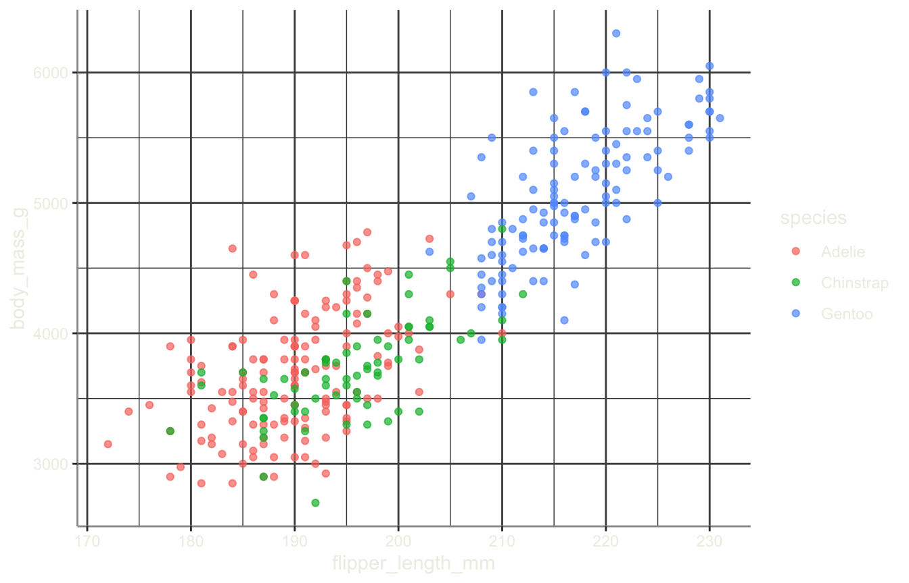
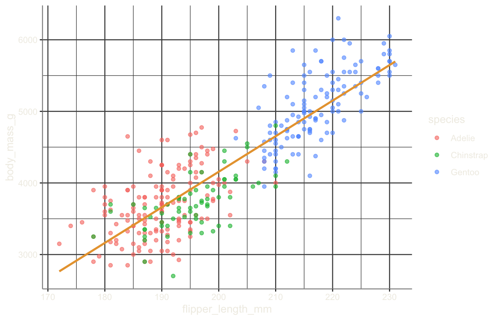

![]()
# A tibble: 3 × 3
species n avg_mass
<chr> <int> <dbl>
1 Adelie 152 3701.
2 Chinstrap 68 3733.
3 Gentoo 124 5076.Explore your data: the tidyverse
The R Statistical Language · Session 2
1 Welcome back
1.1 Where we left off
In Session 1 you built the core structures of R:
- the console, scripts, and R as a calculator;
- vectors: the workhorse, and the four ways to subset them;
- lists: containers of anything, reached with
[[/$; - data frames & tibbles: the tables you analyse;
- reading & writing data files.
markdown
## Where we left off {.inv}
In Session 1 you built the core structures of R:
::: {.spread .spread-md .spread-evenly}
- the [console]{.green}, scripts, and R as a [calculator]{.green};
- [vectors]{.green}: the workhorse, and the four ways to subset them;
- [lists]{.amber}: containers of anything, reached with `[[`/`$`;
- [data frames]{.indigo} & [tibbles]{.indigo}: the tables you analyse;
- [reading]{.indigo} & writing data files.
:::
1.2 Today’s map
1Foundations
2Explore your data
3Repeat & package
Session 2 is the “explore your data” move of the course: take rows and columns you stored, and turn them into understanding.
- shape it: the pipe
|>anddplyr/tidyr:filter,select,mutate,arrange,group_by/summarise,pivot_*; - read it: base-R workhorses, then ggplot2’s layered grammar: histograms, scatters, facets, boxplots;
- understand it: the transform → plot → interpret loop that is Exploratory Data Analysis.
The thread. We keep the penguins data the whole session: shape it, then plot it, then read the answers back off the plots. The EDA pipeline you build here is what the repeat & package session and the Reproducible Workflows course will build on.
markdown
## Today's map {.inv}
::: {.session-arc}
<div class="step s1"><span class="n">1</span>Foundations</div><div class="connector"></div><div class="step s2 current"><span class="n">2</span>Explore your data</div><div class="connector"></div><div class="step s3"><span class="n">3</span>Repeat & package</div>
:::
Session 2 is the **"explore your data"** move of the course: take rows and columns you *stored*, and turn them into understanding.
::: {.spread .spread-md .spread-evenly}
- [shape it]{.green}: the pipe `|>` and `dplyr`/`tidyr`: `filter`, `select`, `mutate`, `arrange`, `group_by`/`summarise`, `pivot_*`;
- [read it]{.amber}: base-R workhorses, then [ggplot2]{.amber}'s layered grammar: histograms, scatters, facets, boxplots;
- [understand it]{.indigo}: the **transform → plot → interpret** loop that is Exploratory Data Analysis.
:::
::: {.callout-desc}
**The thread.** We keep the penguins data the whole session: shape it, then plot it, then read the answers back off the plots. The EDA pipeline you build here is what the *repeat & package* session and the Reproducible Workflows course will build on.
:::
2 Tidyverse data transformation
2.1 The tidyverse at a glance
A family of R packages that work as one: consistent syntax, a shared pipe, and the same data frame in → data frame out flow.
- readr: bring data in (
read_csv); - tibble: the modern data frame;
- dplyr: transform rows, columns, groups (today);
- tidyr: reshape: keep data tidy (
pivot_*); - ggplot2: visualise (the very next section);
- plus
purrr(iterate),stringr(strings),forcats(factors),lubridate(dates).
Today we master dplyr + tidyr: the transform engine that feeds every ggplot and every analysis. The long tail (purrr, stringr, …) you pick up on demand; they all share the same one grammar.
markdown
## The tidyverse at a glance {.inv}
A **family of R packages** that work as one: consistent syntax, a shared pipe, and the same *data frame in → data frame out* flow.
::: {.spread .spread-md .spread-evenly}
- [readr]{.green}: bring data *in* (`read_csv`);
- [tibble]{.green}: the modern data frame;
- [dplyr]{.amber}: *transform* rows, columns, groups (**today**);
- [tidyr]{.amber}: *reshape*: keep data [tidy]{.amber} (`pivot_*`);
- [ggplot2]{.indigo}: *visualise* (the very next section);
- plus `purrr` (iterate), `stringr` (strings), `forcats` (factors), `lubridate` (dates).
:::
::: {.callout-desc}
**Today we master `dplyr` + `tidyr`**: the transform engine that feeds every `ggplot` and every analysis. The long tail (`purrr`, `stringr`, …) you pick up on demand; they all share the same one grammar.
:::
2.2 The pipe: |>
|> sends the value on its left into the first argument of the function on its right: read it as “then”:
The pipe keeps your script readable top-to-bottom; the nested alternative reads inside-out. The backbone of data work: one rule, the data always goes first.
markdown
## The pipe: `|>` {.inv}
`|>` sends the value on its left into the *first argument* of the function on its right: read it as "**then**":
::: {.split-2}
::: {.codewindow .r width="100%"}
The pipe: top-to-bottom
```r
penguins |> filter(species == "Adelie")
# reads: penguins, THEN filter(...)
```
:::
::: {.codewindow .r width="100%"}
The nested equivalent: inside-out
```r
filter(penguins, species == "Adelie")
# order of operations is reversed
```
:::
:::
::: {.paper-card}
The pipe keeps your script readable **top-to-bottom**; the nested alternative reads inside-out. The backbone of data work: one rule, **the data always goes first**.
:::
2.3 Rows and columns: filter & select
Two verbs get you the slice you need: rows by a condition, columns by name:
filter rows, select columns
filter() keeps rows; select() keeps columns. Multiple conditions in filter are AND-ed by default.
markdown
## Rows and columns: `filter` & `select` {.inv}
Two verbs get you the *slice* you need: **rows** by a condition, **columns** by name:
::: {.codewindow .r width="100%"}
filter rows, select columns
```r
penguins |> filter(body_mass_g >= 4000) # keep rows that match
penguins |> filter(species != "Chinstrap", !is.na(sex)) # conditions AND together
penguins |> select(species, island, body_mass_g) # keep these columns
penguins |> select(-bill_depth_mm) # …or drop just one
```
:::
::: {.paper-card}
`filter()` keeps **rows**; `select()` keeps **columns**. Multiple conditions in `filter` are AND-ed by default.
:::
2.4 New columns: mutate
mutate() computes new columns from existing ones, keeping everything else:
Compute a new column with mutate()
New columns are available to later steps in the same pipe, and you can mutate() several columns at once.
markdown
## New columns: `mutate` {.inv}
`mutate()` computes **new columns** from existing ones, keeping everything else:
::: {.codewindow .r width="100%"}
Compute a new column with `mutate()`
```r
penguins |>
mutate(bmi = body_mass_g / (flipper_length_mm / 100)^2) |>
select(species, flipper_length_mm, body_mass_g, bmi)
```
:::
::: {.paper-card}
New columns are available to later steps in the **same** pipe, and you can `mutate()` several columns at once.
:::
2.5 Recode with case_when
case_when() turns a sequence of if…else conditions into a new column: a tidyverse-friendly replacement for nested ifelse:
Multiple conditions, first match wins
case_when reads like a look-up table: each condition ~ value row is evaluated in order, and .default catches everything else. Perfect for binning or relabelling inside a mutate().
markdown
## Recode with `case_when` {.inv}
`case_when()` turns a sequence of **if…else** conditions into a new column: a tidyverse-friendly replacement for nested `ifelse`:
::: {.codewindow .r width="100%"}
Multiple conditions, first match wins
```r
penguins |>
mutate(size = case_when(
body_mass_g >= 5000 ~ "large",
body_mass_g >= 3500 ~ "medium",
.default = "small"
))
```
:::
::: {.paper-card}
`case_when` reads like a **look-up table**: each `condition ~ value` row is evaluated in order, and `.default` catches everything else. Perfect for binning or relabelling inside a `mutate()`.
:::
2.6 Strings with stringr
stringr gives you one consistent family for text: every function is str_* with the string first, so they all pipe:
The str_* verbs: detect, replace, extract
str_detect pairs with filter, str_replace/str_to_* with mutate: strings behave exactly like any tidyverse column once you use str_*.
markdown
## Strings with `stringr` {.inv}
`stringr` gives you one consistent family for **text**: every function is `str_*` with the string first, so they all pipe:
::: {.codewindow .r width="100%"}
The `str_*` verbs: detect, replace, extract
```r
penguins |>
filter(str_detect(species, "tin")) # species contains "tin" (Chinstrap…)
species_clean <- penguins |>
mutate(species = str_to_title(species)) # "adelie" → "Adelie"
```
:::
::: {.paper-card}
`str_detect` pairs with `filter`, `str_replace`/`str_to_*` with `mutate`: strings behave exactly like any tidyverse column once you use `str_*`.
:::
2.7 across(): apply to many columns
across() applies one expression to every column that matches a selector: no copy-pasting verbs per column:
Apply mean within a group, over several columns
across(where(is.numeric), …) targets a whole family of columns at once: the bridge from “many similar lines” to programmatic thinking you’ll meet again in Session 3’s functions.
markdown
## `across()`: apply to many columns {.inv}
`across()` applies one expression to **every column that matches** a selector: no copy-pasting verbs per column:
::: {.codewindow .r width="100%"}
Apply `mean` within a group, over several columns
```r
penguins |>
group_by(species) |>
summarise(across(where(is.numeric), \(x) mean(x, na.rm = TRUE)))
```
:::
::: {.paper-card}
`across(where(is.numeric), …)` targets a whole **family** of columns at once: the bridge from "many similar lines" to programmatic thinking you'll meet again in Session 3's functions.
:::
2.8 Sort: arrange
arrange() sorts the rows; wrap a column in desc() to go descending:
Sort with arrange() / desc()
markdown
## Sort: `arrange` {.inv}
`arrange()` sorts the rows; wrap a column in `desc()` to go **descending**:
::: {.codewindow .r width="100%"}
Sort with `arrange()` / `desc()`
```r
penguins |> arrange(body_mass_g) # lightest first
penguins |> arrange(desc(body_mass_g), species) # heaviest first, ties by species
```
:::
2.9 Summarise by group
group_by() + summarise() collapse rows into one row per group: group_by sets the split, summarise reduces each group:
n() counts rows per group; na.rm = TRUE drops missing values inside mean(). The result is a small tidy table, ready to plot or pipe onward.
markdown
## Summarise by group {.inv}
`group_by()` + `summarise()` collapse rows into **one row per group**: `group_by` sets the split, `summarise` reduces each group:
```{r}
#| warning: false
penguins |>
group_by(species) |>
summarise(n = n(), avg_mass = mean(body_mass_g, na.rm = TRUE))
```
::: {.callout-desc}
`n()` counts rows per group; `na.rm = TRUE` drops missing values inside `mean()`. The result is a small tidy table, ready to plot or pipe onward.
:::
2.10 Reshape: pivot_longer & pivot_wider
Tidy data: one row per observation, one column per variable. When it isn’t, reshape:
Wide ↔︎ long with pivot_*
Every tidyverse tool expects tidy data: reshape first, analyse after.
markdown
## Reshape: `pivot_longer` & `pivot_wider` {.inv}
[Tidy data]{.amber}: one row per observation, one column per variable. When it isn't, reshape:
::: {.codewindow .r width="100%"}
Wide ↔ long with `pivot_*`
```r
# wide → long (melt several columns back into one key/value pair)
df |>
pivot_longer(cols = starts_with("bill_"),
names_to = "measure", values_to = "mm")
# long → wide (spread key/value columns back out)
df |>
pivot_wider(names_from = measure, values_from = mm)
```
:::
::: {.paper-card}
Every tidyverse tool expects **tidy data**: reshape first, analyse after.
:::
2.11 Your turn: tidyverse
- Filter Gentoo penguins;
selectthree columns →gentoo. - Add
mass_kg = body_mass_g / 1000. - Group by island;
summarisemean & sd ofbill_length_mm. - Heaviest median body mass per species (
arrange+desc). pivot_longera wide table (names_to,values_to).
Lab 1: tidyverse (≈25 min). Continue in lab-1-tidyverse.R. This is the foundation: the next lab (ggplot2) and the EDA in the Reproducible Workflows course build directly on it. Labs 1–2 together are the EDA half of the pipeline: transform in lab-1, plot in lab-2.
markdown
## Your turn: tidyverse {.paper}
::: {.paper-card}
1. Filter **Gentoo** penguins; `select` three columns → `gentoo`.
2. Add `mass_kg = body_mass_g / 1000`.
3. Group by **island**; `summarise` mean & sd of `bill_length_mm`.
4. Heaviest median body mass per species (`arrange` + `desc`).
5. `pivot_longer` a **wide** table (`names_to`, `values_to`).
:::
::: {.callout-desc}
**Lab 1: tidyverse (≈25 min).** Continue in `lab-1-tidyverse.R`. This is the *foundation*: the next lab (ggplot2) and the EDA in the Reproducible Workflows course build directly on it. **Labs 1–2 together are the EDA half of the pipeline**: transform in `lab-1`, plot in `lab-2`.
:::
3 Plotting with base R
3.1 Why plot?
A plot is the fastest way to feel your data. Four numbers (Anscombe’s quartet) can look identical in a table and totally different in a plot.
The lesson. Always look at your data before you summarise it. A single well-chosen plot often tells you more than ten summary statistics: this is the heart of Exploratory Data Analysis (explored properly in the Reproducible Workflows course).
markdown
## Why plot? {.inv}
A plot is the fastest way to *feel* your data. Four numbers (Anscombe's quartet) can look identical in a table and totally different in a plot.
::: {.callout-desc}
**The lesson.** Always look at your data before you summarise it. A single well-chosen plot often tells you more than ten summary statistics: this is the heart of *Exploratory Data Analysis* (explored properly in the Reproducible Workflows course).
:::
3.2 Histograms in base R
The simplest first look at one variable: hist().
A histogram of one variable
RStudio/Positron draws the plot in the Plots pane, and it appears in your report if you render it. hist() is one call, but its defaults are utilitarian.
markdown
## Histograms in base R {.inv}
The simplest first look at one variable: **`hist()`**.
::: {.codewindow .r width="100%"}
A histogram of one variable
```r
hist(penguins$body_mass_g, # the variable
breaks = 30, # how many bins
col = "steelblue", border = "white",
main = "Penguin body mass (g)") # title
```
:::
::: {.callout-desc}
RStudio/Positron draws the plot in the **Plots** pane, and it appears in your report if you render it. `hist()` is one call, but its defaults are utilitarian.
:::
3.3 Other base-R workhorses
The rest of the base-R drawer
Base R can already do a lot, but its look is dated and customisation is verbose: why we meet ggplot2 next.
markdown
## Other base-R workhorses {.inv}
::: {.codewindow .r width="100%"}
The rest of the base-R drawer
```r
plot(x, y) # scatter plot
barplot(table(x)) # counts of categories
boxplot(y ~ g) # one box per group
curve(sin, 0, 2*pi) # plot a function
```
:::
::: {.paper-card}
Base R can already do a lot, but its look is dated and customisation is verbose: *why* we meet **ggplot2** next.
:::
3.4 The limit of base-R plots
Base plot() is fine for a quick peek. For publication-grade graphics (faceting, legends, themes, layered encodings), it gets unwieldy fast.
That’s the gap ggplot2 fills: a single coherent grammar, rather than a grab-bag of functions.
You’ll implement several of these base-R plots by hand in lab 2, then rebuild one in ggplot2 to feel the difference.
markdown
## The limit of base-R plots {.inv}
Base `plot()` is fine for a quick peek. For **publication-grade** graphics (faceting, legends, themes, layered encodings), it gets unwieldy fast.
That's the gap **ggplot2** fills: a single coherent *grammar*, rather than a grab-bag of functions.
::: {.callout-desc}
You'll implement several of these base-R plots **by hand in lab 2**, then rebuild one in ggplot2 to feel the difference.
:::
4 ggplot2
4.1 The grammar of graphics
ggplot2 (part of the tidyverse) builds every plot from a few composable pieces:
- data: a data frame (usually a tibble);
- aesthetics (
aes): which variables map to which visual channel (x, y, colour, size, fill, …); - geometries (
geom_*): how the data are drawn (points, lines, bars, histograms, …); - facets: small multiples, splitting by a variable;
- scales/themes: the polish.
markdown
## The grammar of graphics {.inv}
**ggplot2** (part of the tidyverse) builds every plot from a few composable pieces:
::: {.spread .spread-md .spread-evenly}
- **[data]{.green}**: a data frame (usually a tibble);
- **[aesthetics]{.green}** (`aes`): *which variables* map to *which visual channel* (x, y, colour, size, fill, …);
- **[geometries]{.amber}** (`geom_*`): *how* the data are drawn (points, lines, bars, histograms, …);
- **[facets]{.indigo}**: small multiples, splitting by a variable;
- **[scales/themes]{.indigo}**: the polish.
:::
4.2 The first ggplot
Every plot starts with ggplot(data, aes(...)), then adds layers with +:
This is the same histogram we drew in base R, but now each piece is explicit and easy to extend.
markdown
## The first ggplot {.inv}
Every plot starts with `ggplot(data, aes(...))`, then adds layers with `+`:
::: {.codewindow .r width="100%"}
The first ggplot
```r
ggplot(penguins, aes(x = body_mass_g)) +
geom_histogram(bins = 30)
```
:::
::: {.paper-card}
This is the *same histogram* we drew in base R, but now each piece is explicit and easy to extend.
:::
4.3 Scatter: two continuous variables
Mapping variables to x and y, and a third to color:

Read it aloud. “Body mass grows with flipper length”, and each species clusters in its own region of this space. That’s a finding you’d never see from summary().
markdown
## Scatter: two continuous variables {.inv}
Mapping variables to `x` and `y`, and a third to `color`:
```{r}
#| fig-width: 7
#| fig-height: 4.5
ggplot(penguins, aes(x = flipper_length_mm, y = body_mass_g)) +
geom_point(aes(color = species), alpha = 0.7) +
theme_dark()
```
::: {.callout-desc}
**Read it aloud.** "Body mass grows with flipper length", and each species clusters in its own region of this space. That's a finding you'd never see from `summary()`.
:::
4.4 One variable per facet
Faceting splits the plot into small multiples: one per level of a variable:

Different species have different distributions of body mass: a comparison that’s hard to see in one pooled histogram.
markdown
## One variable per facet {.inv}
**Faceting** splits the plot into small multiples: one per level of a variable:
```{r}
#| fig-width: 7
#| fig-height: 4.5
ggplot(penguins, aes(x = body_mass_g)) +
geom_histogram(bins = 25, fill = "#2E7D6B", color = "#17251F") +
facet_wrap(~ species, ncol = 1) +
theme_dark()
```
::: {.callout-desc}
Different species have *different* distributions of body mass: a comparison that's hard to see in one pooled histogram.
:::
4.5 Boxplots for groups
Categorical x + continuous y:

A boxplot shows the median, the box (IQR) and outliers at a glance: ideal for comparing a numeric variable across groups.
markdown
## Boxplots for groups {.inv}
Categorical `x` + continuous `y`:
```{r}
#| fig-width: 7
#| fig-height: 4.5
ggplot(penguins, aes(x = species, y = body_mass_g, fill = species)) +
geom_boxplot(alpha = 0.8) +
theme_dark() +
theme(legend.position = "none")
```
::: {.callout-desc}
A boxplot shows the median, the box (IQR) and outliers at a glance: ideal for comparing a numeric variable *across groups*.
:::
4.6 Order factors with forcats
Plots order themselves however the factor levels say: forcats (part of the tidyverse) lets you reorder those levels so graphs tell the story you want:
fct_reorder sorts a factor by another variable
fct_reorder puts the highest median first on the axis: order becomes part of your message. fct_relevel/fct_lump fine-tune and collapse rare levels.
markdown
## Order factors with `forcats` {.inv}
Plots order themselves however the factor levels say: `forcats` (part of the tidyverse) lets you **reorder** those levels so graphs tell the story you want:
::: {.codewindow .r width="100%"}
`fct_reorder` sorts a factor by another variable
```r
penguins |>
mutate(species = fct_reorder(species, body_mass_g, median, na.rm = TRUE)) |>
ggplot(aes(x = species, y = body_mass_g, fill = species)) +
geom_boxplot()
```
:::
::: {.paper-card}
`fct_reorder` puts the *highest median first* on the axis: order becomes part of your message. `fct_relevel`/`fct_lump` fine-tune and collapse rare levels.
:::
4.7 Layers compose
An important ggplot2 habit: plots are built from many layers. For example, scatter + a smooth trend:

geom_point() and geom_smooth() layer on the same plot, each with its own mapping. This layering is what makes ggplot2 so expressive.
markdown
## Layers compose {.inv}
An important ggplot2 habit: plots are built from **many layers**. For example, scatter + a smooth trend:
```{r}
#| fig-width: 7
#| fig-height: 4.5
ggplot(penguins, aes(x = flipper_length_mm, y = body_mass_g)) +
geom_point(aes(color = species), alpha = 0.6) +
geom_smooth(method = "lm", se = FALSE, color = "#E8A33D", linewidth = 1) +
theme_dark()
```
::: {.callout-desc}
`geom_point()` and `geom_smooth()` *layer* on the same plot, each with its own mapping. This layering is what makes ggplot2 so expressive.
:::
4.8 A grammar, not a menu
The power is consistency: you learn a few verbs (geom_point, geom_bar, geom_histogram, facet_wrap, aes) and combine them, instead of memorising a different function per plot type.
There’s a gallery of extensions (e.g. {ggpubr}, {patchwork}, {plotly} for interactivity).
We’ll run a ggplot2 build-up live: from a bare histogram to a faceted, titled, themed figure in a handful of added lines. Watch how small edits compound.
markdown
## A grammar, not a menu {.inv}
The power is **consistency**: you learn a few verbs (`geom_point`, `geom_bar`, `geom_histogram`, `facet_wrap`, `aes`) and combine them, instead of memorising a different function per plot type.
There's a gallery of extensions (e.g. `{ggpubr}`, `{patchwork}`, `{plotly}` for interactivity).
::: {.callout-desc}
We'll run a *ggplot2 build-up* live: from a bare histogram to a faceted, titled, themed figure in a handful of added lines. Watch how small edits compound.
:::
4.9 Your turn: plotting
- Load penguins with
read_csv("penguins.csv"). - Base R: scatter
body_mass_gvsflipper_length_mm, by species. - ggplot2: same plot with
color = species. hist()ofbody_mass_g+facet_wrap(~ species).- Which approach would you reach for?
Lab 2: plotting (≈25 min). Continue in lab-2-plotting.R. Pair-programme: one types, one narrates. With Lab 1, this completes the EDA half of the pipeline: transform then plot, exactly the “explore your data” move from the wrap-up.
markdown
## Your turn: plotting {.paper}
::: {.paper-card}
1. Load penguins with `read_csv("penguins.csv")`.
2. Base R: scatter `body_mass_g` vs `flipper_length_mm`, by species.
3. ggplot2: same plot with `color = species`.
4. `hist()` of `body_mass_g` + `facet_wrap(~ species)`.
5. Which approach would you reach for?
:::
::: {.callout-desc}
**Lab 2: plotting (≈25 min).** Continue in `lab-2-plotting.R`. Pair-programme: one types, one narrates. **With Lab 1, this completes the EDA half of the pipeline**: transform then plot, exactly the "explore your data" move from the wrap-up.
:::5 Wrap up
5.1 The EDA loop
Shape, read, understand.
markdown
## The EDA loop {.dark auto-animate=true background-color="#17251F"}
::: {.big-title data-id="title" style="left:88px; top:150px; width:720px; font-size:72px;"}
Shape,
read,
understand.
:::
::: {.panel data-id="draft" style="left:840px; top:150px; width:150px; height:360px;"}
:::
::: {.panel data-id="review" style="left:1006px; top:150px; width:150px; height:170px;"}
:::
::: {.panel data-id="release" style="left:1006px; top:340px; width:150px; height:170px;"}
:::
5.2 Shape, read, understand
Exploring data is one loop.
Shape it
The pipe and dplyr/tidyr: filter, select, mutate, arrange, group_by/summarise, pivot_*, to get the data the shape you need.
Read it
Base-R workhorses (hist, plot, boxplot), then ggplot2’s layered grammar: mapping, geoms, facets, themes.
Understand it
Always look before you summarise: a well-chosen plot answers questions ten summary statistics can’t.
markdown
## Shape, read, understand {.light auto-animate=true background-color="#F1EEE6"}
::: {.big-title data-id="title" style="left:92px; top:104px; width:1100px; font-size:44px;"}
Exploring data is one loop.
:::
::: {.panel .card data-id="draft" style="left:96px; top:220px; width:340px; height:360px;"}
[Shape it]{.h}
[The pipe and `dplyr`/`tidyr`: `filter`, `select`, `mutate`, `arrange`, `group_by`/`summarise`, `pivot_*`, to get the data the shape you need.]{.p}
:::
::: {.panel .card data-id="review" style="left:470px; top:220px; width:340px; height:360px;"}
[Read it]{.h}
[Base-R workhorses (`hist`, `plot`, `boxplot`), then ggplot2's layered grammar: mapping, geoms, facets, themes.]{.p}
:::
::: {.panel .card data-id="release" style="left:844px; top:220px; width:340px; height:360px;"}
[Understand it]{.h}
[Always look before you summarise: a well-chosen plot answers questions ten summary statistics can't.]{.p}
:::
5.3 Understand: the thread
Transform → plot → interpret.
The EDA loop
Shape the data until it’s tidy, plot it to see it, and read the answer back off the plot; then reshape and replot to chase the next question. This transform → plot → interpret loop is the heart of data science: repeat it often, and the repeat & package session shows you the loops underneath and turns the moves you repeat into reusable functions you keep.
markdown
## Understand: the thread {.light auto-animate=true background-color="#F1EEE6"}
::: {.big-title data-id="title" style="left:92px; top:104px; width:1100px; font-size:44px;"}
Transform → plot → interpret.
:::
::: {.panel .card data-id="release" style="left:96px; top:200px; width:800px; height:400px;"}
[The EDA loop]{.h}
[Shape the data until it's tidy, plot it to *see* it, and read the answer back off the plot; then reshape and replot to chase the next question. This transform → plot → interpret loop is the heart of data science: repeat it often, and the *repeat & package* session shows you the loops underneath and turns the moves you repeat into reusable functions you keep.]{.p style="font-size:24px; line-height:1.6;"}
:::
::: {.panel .marker data-id="draft" style="left:944px; top:230px;"}
:::
::: {.panel .marker data-id="review" style="left:944px; top:290px;"}
:::
5.4 Next time
Repeat & package: loops, matrices, functions.
Between sessions: finish any outstanding labs, and skim R for Data Science, ch. 3 (visualisation) to reinforce the ggplot2 grammar you’ll reuse everywhere.
markdown
## Next time {.dark .finale auto-animate=true background-color="#17251F"}
::: {.big-title data-id="title" style="left:240px; top:300px; width:800px; font-size:66px; text-align:center;"}
Repeat & package: loops, matrices, functions.
:::
::: {.panel data-id="draft" style="left:470px; top:150px; width:110px; height:110px;"}
:::
::: {.panel data-id="review" style="left:590px; top:150px; width:110px; height:110px;"}
:::
::: {.panel data-id="release" style="left:710px; top:150px; width:110px; height:110px;"}
:::
::: {style="position:absolute; left:96px; top:600px; width:1024px; font-size:17px; color:rgba(241,238,230,0.62);"}
Between sessions: finish any outstanding labs, and skim [R for Data Science, ch. 3 (visualisation)](https://r4ds.hadley.nz/data-visualize) to reinforce the ggplot2 grammar you'll reuse everywhere.
:::![]()
A. Stamm aymeric.stamm@cnrs.fr · The R Statistical Language · Session 2